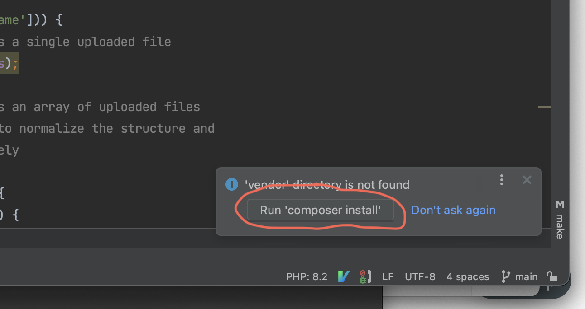
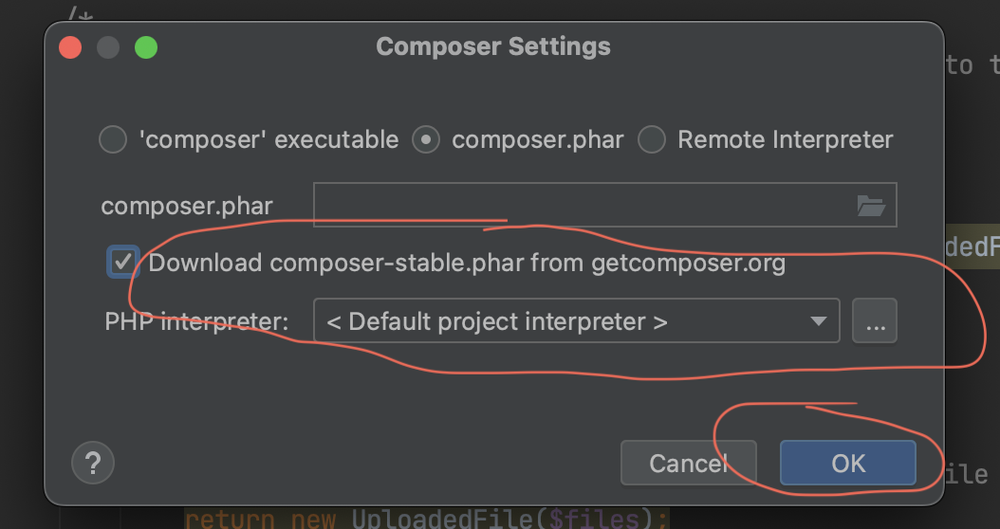
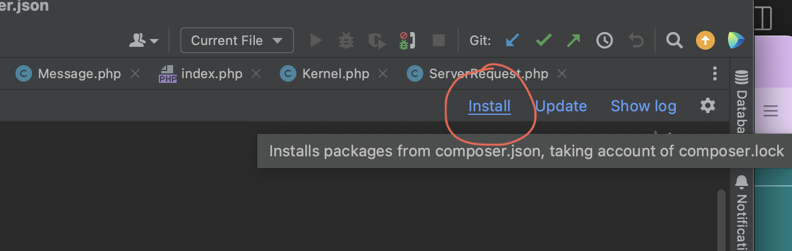
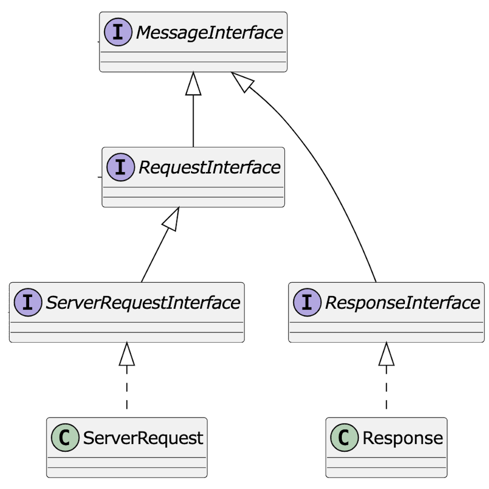
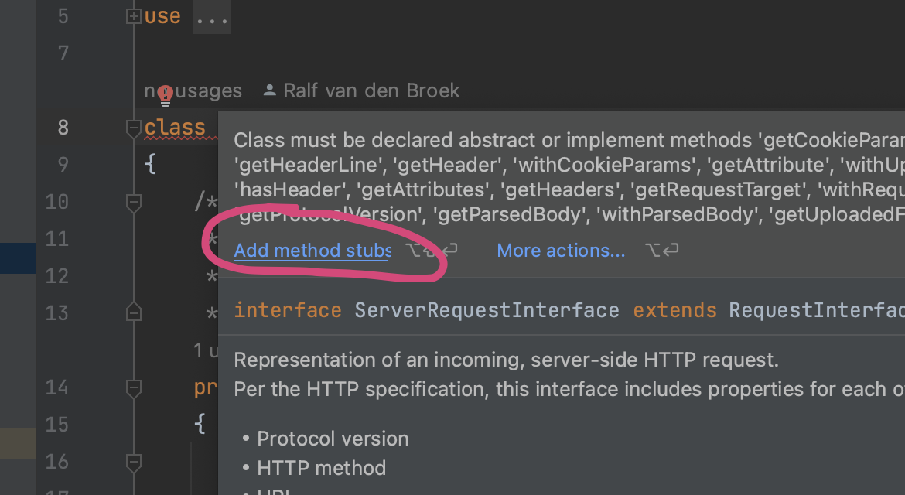
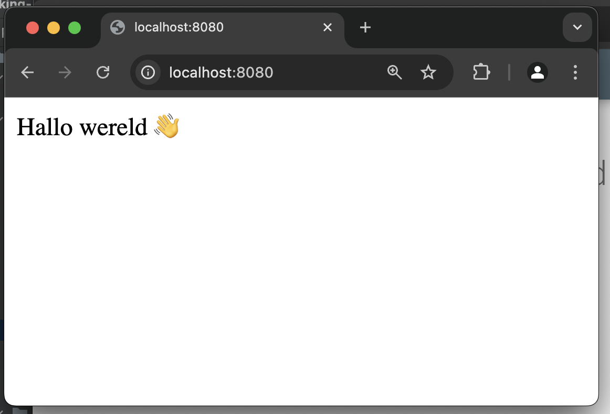

iteratie 1: een volledige round-trip¶
Beschrijving van de inhoud¶
Tijdens het werkcollege pas je de ingebouwde functionaliteiten die PHP heeft om web requests te verwerken toe, met name de zogeheten superglobals. Daarnaast ga je aan de slag met het framework Symfony; dit framework zal gedurende het vak gebruikt worden als concreet voorbeeld van de behandelde patterns. In dit werkcollege pas je de component HttpFoundation toe, die de request- en responsestructuur van Symfony omvat.
Je begint met de ontwikkeling van de eigen webapplicatie voor de eindopdracht door een eigen request handling component te ontwikkelen aan de hand van de patterns die in de colleges aan bod gekomen zijn.
stap 1: installeer de afhankelijkheden¶
Nadat je de repository hebt gecloned, moet je de afhankelijkheden (dependencies) nog downloaden. De dependency-manager van php is composer. Zie ook de betreffende kennisclip hierover.
Composer maakt gebruik van het bestand package.json om te checken welke afhankelijkheden er allemaal in het project zitten. Als je op dit bestand klikt, verschijnt er een dialoogvenster waarmee je direct composer kunt downloaden. Als dit gedaan is, kun je vervolgens de dependencies installeren: die komen in de directory vendor terecht.
  
stap 2: bestudeer en implementeer de Message-gerelateerde interfaces.¶
Bestudeer de interfaces die gedefinieerd zijn in vendor/Psr/http-message/src. Deze week gaat het met name om de interfaces waarvan hieronder het diagram is weergegeven.

Wat is het fundamentele werk dat een web-framework moet doen? Het omzetten van een ServerRequest in een Response. Niet toevalligerwijs zie je deze twee klassen in het schema onderaan weergegeven. De klasse ServerRequest implementeert de interface ServerRequestInterface en de klasse Response implementeert de interface ResponseInterface.
Zoals je ziet overeft ServerRequest van Request en overerft zowel Request als Response van Message. Allereerst zul je dus deze hele hiërarchie van interfaces in implementerende klassen moeten weerspiegelen: doe dit in de directory Http. Als je in een klasse de betreffende interface implementeert, kun je met phpstorm automatisch stubs voor de betreffende methoden genereren.
Tip
Het is handigste wanneer je met het implementeren van de interfaces begint met de bovenste klassen, Message dus in dit geval. Op die manier voorkom je dat phpstorm stubs genereert van de hele hiërarchie van interfaces.

ServerRequest en Request
Meestal spreken we over het omzetten van een Request in een Response; waar komt dan ineens die ServerRequest vandaan?
Als je de docs leest, staat er bij Request dat dit een representatie is van een outgoing, client side request, terwijl er bij ServerRequest staat dat dit een representatie is van een incoming, server side HTTP request. Het punt is dat webframeworks dikwijls zelf ook een request moeten maken, bijvoorbeeld naar een andere service of API. Hier is de Request voor nodig. Het ServerRequest is datgene dat het framework ontvangt, terwijl het Request datgene is dat de server (intern) verstuurt.
Stap 3: De Kernel¶
Nu hebben we al bijna de hele infrastructuur die nodig is om een eerste round trip te kunnen uitvoeren. Het enige dat we nog nodig hebben is de Kernel.
In een web-framework is de Kernel de kern van de applicatie 😎. Het is de centrale klasse die verantwoordelijk is voor het opstarten, configureren, en afhandelen van verzoeken. We gaan dit ding in de komende weken nog uitgebreid tegenkomen, maar voor nu hoeft -ie niet zo gek veel te doen.
Maak een klasse Kernel die de KernelInterface implementeert (die staat in vendor/hanze/itvb21web2-interfaces/src/Kernel). Zoals je ziet overerft dit ding van RequestHandlerInterface die maar één methode heeft: handle(ServerRequest):Response. Dít is dus de methode die uiteindelijk een request omzet in een response.
Maak in de handle-methode van Kernel een nieuwe Response aan met gewoon een hard gecodeerde tekst als inhoud. Retourneer dit nieuwe object.
Stap 4: de klasse Request en Response¶
De methode handle moet een ResponseInterface teruggeven. Gelukkig hebben we hierboven een klasse Response gemaakt dit deze interface implementeert. Dit ding is een subklasse van Message, die in de constructor onder andere een string mee kan krijgen. Maak in Response een constructor die een string ontvangt en geef deze string door aan de superklasse.
De constructor van Message vereist nog twee andere parameters: protocol_version en headers. Voor nu is het prima als je gewoon "1.1" en een lege array in stopt.
Tip
Een constructor in een php-klasse heeft de signature public function __construct(...). Om de constructor van de superklasse aan te roepen, gebruik je parent::__construct(...).
De klasse Request is ook een subklasse van Message. Voorzie Request van een constructor waarmee je standaardwaarden voor de vereiste parameters aan de superklasse meegeeft (parent::construct("1/1", []., "")) – we zullen dit in de refactorslag van deze week verbeteren.
Implementeer tenslotte de methode getBody() in de klasse Message. Deze methode moet eenvoudig de body teruggeven die bij het aanmaken van een Message wordt meegegeven. Bestudeer de constructor van deze klasse om te zien hoe dit werkt.
De frontcontroller¶
In web-frameworks zoals deze is de frontcontroller het script dat het request in eerste instantie opvangt. In ons geval is dat het script public/index.php. Dit bestand bestaat nu nog uit maar één regel: echo 'Hello world!;. Het is de bedoeling dat we deze regel vervangen door het opzetten van de objecten-graaf op basis van de infrastructuur die we hierboven hebben gemaakt.
$app = new Kernel();
$request = new ServerRequest();
$response = $app->handle($request);
echo $response->getBody();
Nu kun je een server opstarten om de boel te testen. Ga naar de root van je project en start een php-ontwikkelserver op:
php -S localhost:8000 -t public
Als je nu met een browser naar localhost:8000 gaat, zul je (als het goed is) de tekst te zien krijgen die je in de handle-methode van de Kernel hebt gebruikt om een Response-object aan te maken.
